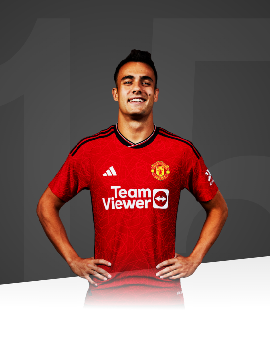

The chance to represent this great club is one that I could not turn down.

AGE
26
APPEARANCES
3
CLEAN SHEETS
0
BIOGRAPHY
Sergio Reguilon became United's fifth signing of the summer 2023 transfer window when his loan move from Tottenham Hotspur was confirmed on deadline day.
Born in Spain's capital city, Reguilon grew up there and joined Real Madrid’s Academy system in 2005, aged eight.
He spent 10 years working his way through the age groups before moving on loan to Segunda Division B side UD Logrones for the 2015/16 campaign, making his senior debut on 23 August 2015 in a 3-0 home win over SD Compostela.
Reguilon was recalled to Real Madrid in January 2016, and played for Real Madrid Castilla in the second half of the season. His form prompted UD Logrones to take the left-back on loan once more, for 2016/17, when he made 31 appearances and scored eight goals.
The following season, Reguilon was a regular starter for Real Madrid Castilla and was promoted to the first-team squad for the beginning of the 2018/19 campaign.
Sergio made his first senior appearance for Real Madrid on 2 October 2018, in the Champions League, and made his La Liga debut one month later. He would go on to play 22 times that season, across La Liga, the Champions League and Copa del Rey. The left-back was also in the squad that won the 2018 FIFA Club World Cup, alongside his future United team-mates Casemiro and Raphael Varane.
In March 2019, Reguilon made his debut for Spain's Under-21s, as they beat Romania 1-0 in a UEFA Under-21s European Championship qualifier.
For the 2019/20 season, Sergio went out on loan once more, to Sevilla, and really made his mark, playing 38 matches across all competitions and racking up three goals and five assists.
This was also a campaign in which Sevilla won the Europa League - knocking United out in the semi-finals - and Reguilon was named in the competition's Squad of the Season.
Sergio's form for Sevilla was noticed by his national side and he received his first senior call-up in October 2019 for fixtures against Norway and Sweden. While he didn't play in those games, he went on to make his debut for Spain on 6 September 2020, playing the full 90 minutes and registering an assist in a 4-0 UEFA Nations League victory over Ukraine.
Later that same month, Reguilon moved to Tottenham Hotspur on a permanent deal. Managed by former United boss Jose Mourinho, Sergio made his debut for the club on 29 September 2020 in a Carabao Cup win over Chelsea.
His Premier League bow would soon follow, in a 6-1 win at Old Trafford on 4 October, and he scored his first Spurs goal on 21 November in a 2-1 triumph over Leeds. Sergio made 36 appearances in all competitions during his first season with the North London club, assisting six goals. He played 31 times in the following campaign before he missed the latter part of it due to a groin problem.
Reguilon returned to Spain by joining Atletico Madrid on loan for 2022/23, but injury limited him to 12 appearances and he was back at Spurs in the summer of 2023.
On 1 September 2023, Reguilon arrived at United on loan from Spurs, becoming our fifth addition of the summer transfer window and the seventh Spaniard to sign for the club.